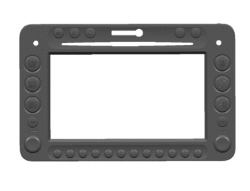
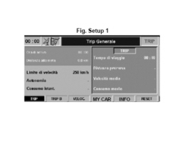
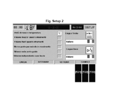
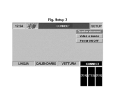
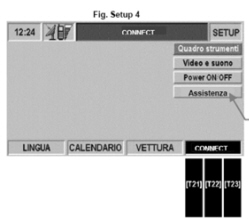
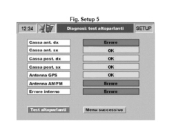
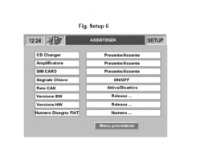

5580PJ CONNECT AUTODIAGNOSTIC PROCEDURE
- Path
- Test > 55 ELECTRICAL EQUIPMENT > 5580 SPECIAL ACCESSORIES > 5580P CONNECT PANEL > 5580PJ CONNECT AUTODIAGNOSTIC PROCEDURE
- Kind
- test / check procedure
- Applies to
- all engines; all production periods
- Interactive page
- https://sloeber94.github.io/elrnDB-aBrrSpdr/en/#/946001134
Applies to: all engines; all production periods
Turn the key to the ON position.
Press the left knob to switch the CONNECT on.
Check that the display comes on.
Check that all the buttons/knobs for the CONNECT in the front panel are lit up.
Press TRIP button.

Check that the Setup screen 1 appears on the display:

- Press one of the reconfigurable buttons for the MY CAR item to access the Connect SETUP menu.
Check that the Setup screen 2 appears on the display:

- Press one of the following three reconfigurable buttons [T21] or [T22] pr [T23] for the CONNECT item to access the NITt SETUP menu.
Check that the Setup screen 3 appears on the display

- Press button [T21] or [T22] pr [T23] for the CONNECT item three consecutive times.
Press the right knob (R02) and check that screen 4 with the item "Assistance" appears on the display:

- Turn the right knob to select the item "Assistance" from the menu.
- Press the right knob to confirm and access the diagnostic data.
Check that the Setup screen 5 appears on the display (Diagnosis: speaker test):

The first part of the results of the tests carried out during self-diagnosis is displayed. The test outcome is shown for each outcome (e.g.: OK or ERROR).
Check the connections for the 4 audio channels for the four items in the list.
- Turn the right knob (R02) to select the "Next menu" item.
- Press the right knob (R02) to confirm, then check that the screen in Setup Fig. 6 is shown on the display:

The second part of the results of the tests carried out during self-diagnosis is displayed.
The result of the test is indicated for each item (Present/Absent, Activated/Deactivated or On/Off);
Check the CD Changer connection, only if this feature is included as an option in the vehicle specification.
Check the HI-FI Amplifier connection, only if this feature is included as an option in the vehicle specification.